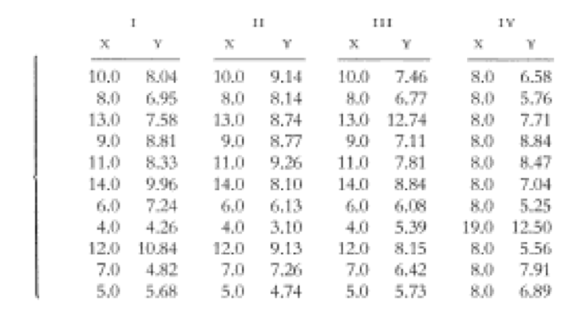
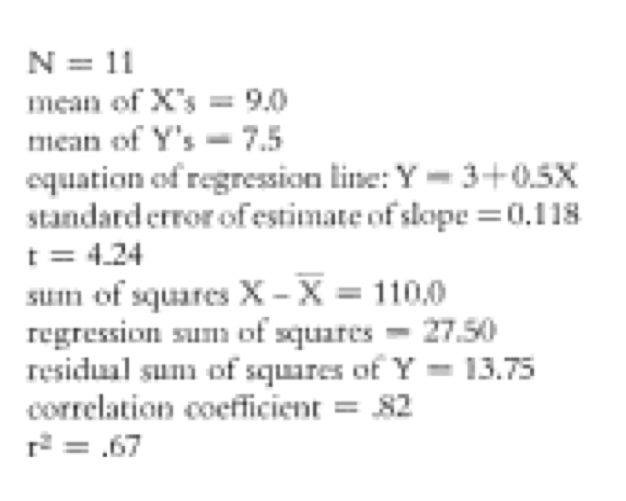
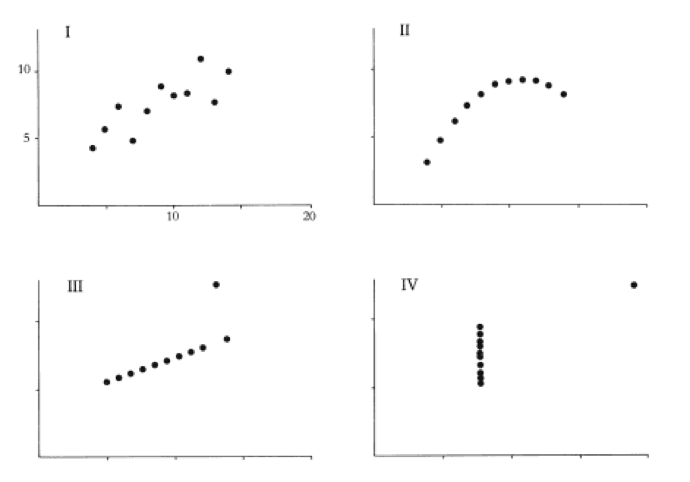
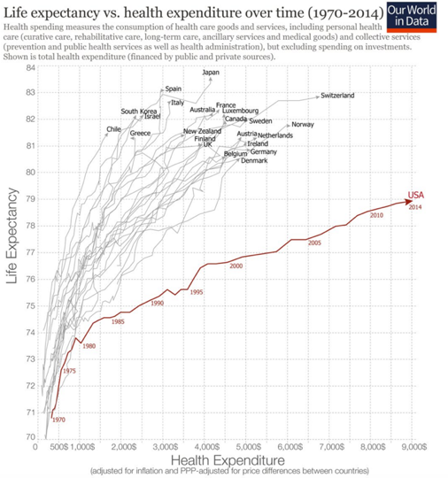

Practical Theory for Data Visualization
Applied Data Analytics
Data Viz is Great
In Brief
Anscombe's Quartet
Anscombe's Quartet
Anscombe's Quartet
Keeling Curve

We were witnessing for the first time nature's withdrawing of C02 from the air for plant growthduring the summer, and returning it each suceeding winter.
-- Charles Keeling
Keeling Curve

Keeling Curve

The eye and the visual cortex form a massively parallel processor that provides the highest bandwidth channel into human cognitive centers-- Colin Ware
Memory & Recall
TL;DR: Data Viz Is Great for:
- Exploratory Data Analysis
- Communicating Data
- Absorbing Lots of Data Quickly
- Making Data Memorable
DataViz is Hard
Because Your Eyes are Broken
So Theory Is Important
Color
Is great. Has downsides.
Color can be very powerful
Preattentive. How many fives?
Doesn't require two-2 positioning (we like choropleths/bubble charts
But is affected by it (hard to see color of small areas)
Downsides
Very much subject to crowding out (Stephen Few Imagery
Has three dimensions
we do not percieve hue evenly (cones are messed up)
We don't percieve light linearly (rods are messed up too)
Linear color scales are VERY difficult